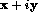

Next: Literal Constants
Up: Data Objects
Previous: Data Objects
Fortran 90 has three broad classes of object type,
- character;
- boolean;
- numeric.
these give rise to five simple intrinsic types, known a default types,
- CHARACTER for strings of one or more characters;
- LOGICAL for objects which have the values true or false;
- REAL (and DOUBLE PRECISION) for approximate, possibly fractional numbers;
- INTEGER for exact whole numbers;
- COMPLEX for representing numbers of the form:  .
Other intrinsic types will be described later.
Each type has
- a name
- a set of valid values
- a means to denote values
- a set of operators
Note,
- Most programming languages have the same broad classes of objects.
- The three broad classes cannot be intermixed without some sort of
type coercion being performed.
- REAL and DOUBLE PRECISION objects are approximate. DOUBLE PRECISION
should not now be used. In FORTRAN 77 an object of this type had greater
precision than REAL, in Fortran 90 the precision of a REAL object may
be specified making the DOUBLE PRECISION data type redundant (see Section
 ).
). - All numeric types have finite range.
- A default type is not parameterised by a kind value.
Next: Literal Constants
Up: Data Objects
Previous: Data Objects
Adam Marshall ©University of Liverpool, 1996
Tue Nov 26 17:50:42 GMT 1996